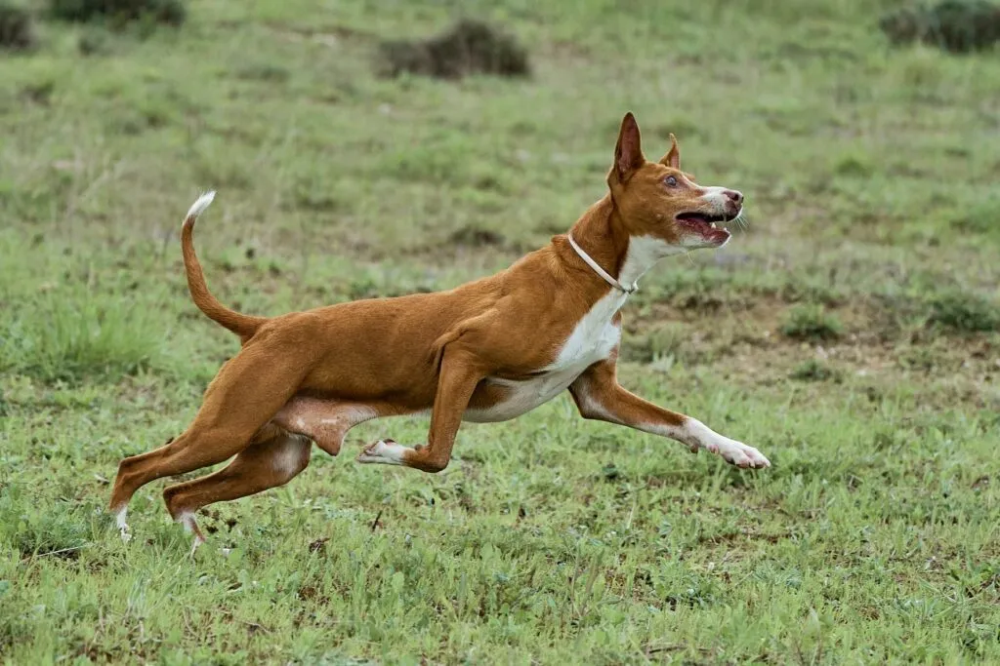

Raza canina mediterránea de origen ancestral, utilizada históricamente para la caza menor por su extraordinario
desarrollo de los sentidos. Cuerpo atlético y estilizado, capaz de alcanzar hasta 45 km/h. Cabeza alargada,
orejas
grandes erguidas, hocico afilado y ojos ámbar. Pelaje corto, fino, en blanco, rojizo o combinaciones.
Temperamento
leal, cariñoso e independiente. Esperanza de vida de 12-15 años.
⛰️ Resistencia: Gran adaptación a terrenos difíciles

ALIMENTACIÓN
Dieta Equilibrada
🥩 Proteína: Alta calidad, preferiblemente carne magra
⚖️ Cantidad: Ajustada al peso y nivel de actividad
🚫 Evitar: Sobreasaladas y alimentos procesados
💧 Hidratación: Agua fresca siempre disponible
ADIESTRAMIENT0
Educación
🎯 Constancia: Requiere sesiones cortas y repetitivas
🤝 Refuerzo: Positivo, con premios y caricias
🐕 Socialización: Desde cachorro, con personas y perros
⚠️ Precaución: Nunca con métodos agresivos o duros
SALUD
Enfermedades Comunes
🩸 Otitis: Revisar orejas por su forma erguida
💊 Alergias: Cutáneas, suelen ser sensibles
🦴 Fracturas: Precaución por su delgadez y velocidad
🏥 Revisiones: Veterinarias anuales recomendadas
CONVIVENCIA
En Familia
El podenco se adapta bien a la vida familiar, siendo especialmente cariñoso con los niños. Es importante
respetan
su espacio de descanso y no subjectedlo a ruidos excesivos. Con una socialización adecuada, puede coexistir
pacíficamente con otros animales domésticos, aunque su instinto de caza puede activarse ante pequeños mamíferos.